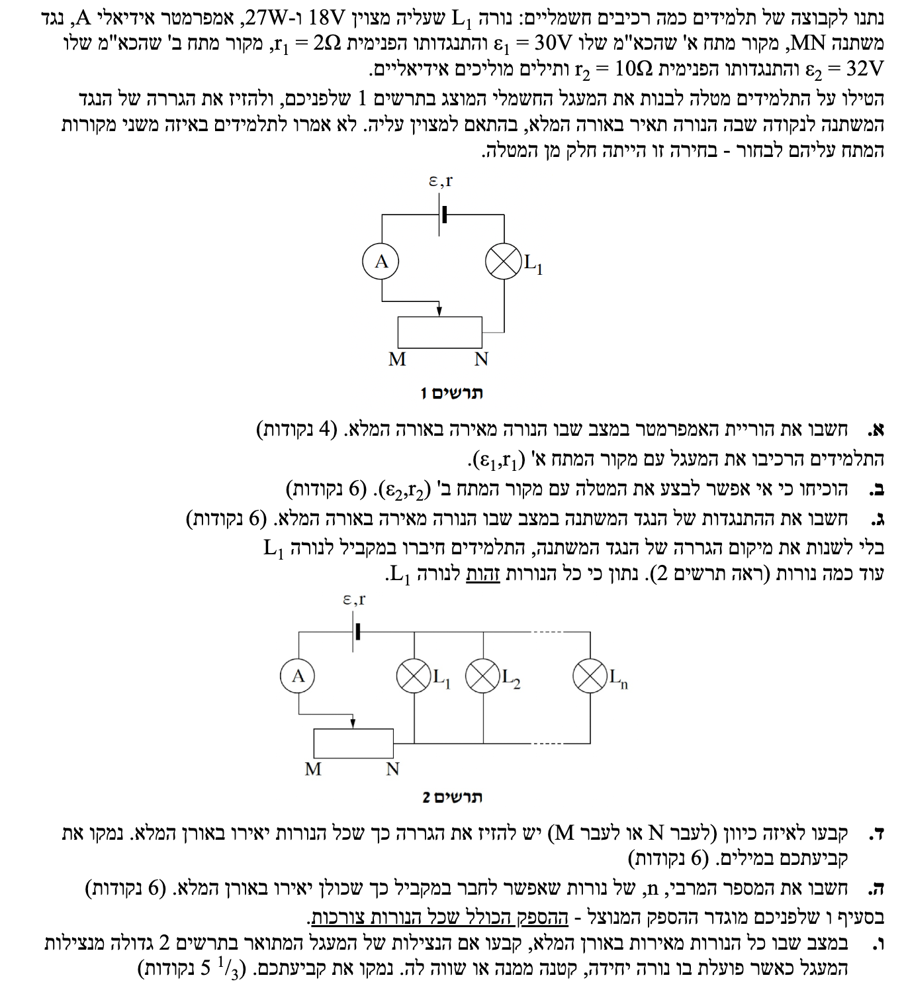
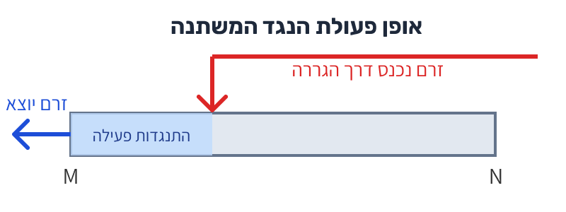

פתרון בגרות בפיזיקה - מעגלי זרם ישר
חשמל 2020 שאלה 3
ברוכים הבאים לפתרון המודרך! נעבור על השאלה שלב אחר שלב, נבין את ההיגיון הפיזיקלי, ונשתמש בנוסחאות המופיעות בדף הנוסחאות. זכרו: הבנת העיקרון חשובה יותר מההצבה המספרית.
עודכן:
--- --:--:--

[תמונת השאלה המקורית]
לא נמצאה תמונה בשם question-image.png באותה תיקייה.
מה נתון: עבור הנורה \( L_1 \) הנתונים הרשומים עליה הם: מתח הפעולה התקני (הנומינלי) הוא \( V_L = 18\text{V} \) וההספק התקני הוא \( P_L = 27\text{W} \). נתון כי המעגל מחובר כך שהנורה מאירה באורה המלא (כלומר, פועלת בדיוק לפי הנתונים הרשומים עליה). היחידות הן יחידות MKS תקניות (וולט, ואט) ולכן אין צורך בהמרה בשלב 0.
מה מחפשים: את הוריית האמפרמטר. מכיוון שהאמפרמטר מחובר בטור לנורה, הוא מודד את הזרם החשמלי העובר בה, שנסמנו באות \( I \).
נוסחאות ועקרונות בשימוש:
הקשר בין הספק, מתח וזרם: \( P = V_{AB} \cdot I \)
חישוב צעד-אחר-צעד:
נחלץ את הזרם מהנוסחה ונציב את הנתונים של הנורה כאשר היא עובדת בהספק מלא:
\[ I = \frac{P_L}{V_L} \]
\[ I = \frac{27}{18} = 1.5\text{A} \]
מסקנה: הוריית האמפרמטר היא \( 1.5\text{A} \).
טיפ מורה:
"אור מלא" פירושו תמיד שהרכיב מקבל בדיוק את הנתונים הרשומים עליו מהיצרן. אם הנורה הייתה מקבלת מתח נמוך מ-18V, היא הייתה מאירה חלש יותר. זכרו שאמפרמטר אידיאלי לא משפיע על הזרם במעגל (התנגדותו אפסית). בנוסף, כדאי לחשב כבר עכשיו את התנגדות הנורה (שנשארת קבועה), שכן נצטרך אותה בהמשך: \( R_L = \frac{V_L}{I} = \frac{18}{1.5} = 12\Omega \).
מה נתון: מקור מתח ב' בעל נתונים: כוח אלקטרו-מניע (כא"מ) \( \varepsilon_2 = 32\text{V} \) והתנגדות פנימית \( r_2 = 10\Omega \). דרישת הזרם עבור אורה המלא של הנורה היא \( I = 1.5\text{A} \) (כפי שחישבנו בסעיף א').
מה מחפשים: להוכיח מתמטית מדוע אי אפשר להגיע למצב בו הנורה מאירה באורה המלא (דורשת מתח של 18V) כאשר משתמשים במקור מתח ב'.
נוסחאות ועקרונות בשימוש:
מתח הדקים של מקור מתח (המתח שהוא מספק למעגל החיצוני): \( V_{ab} = \varepsilon - I \cdot r \)
פתרון:
כדי שהנורה תאיר באורה המלא, חייב לזרום דרכה זרם של \( 1.5\text{A} \). נבדוק מה יהיה מתח ההדקים של מקור ב' אם אכן יזרום בו זרם כזה. מתח ההדקים הוא המקסימום מתח שהמעגל החיצוני (הנורה והנגד המשתנה) יכולים לקבל. נציב בנוסחת מתח ההדקים:
\[ V_{ab} = 32 - 1.5 \cdot 10 \]
\[ V_{ab} = 32 - 15 = 17\text{V} \]
קיבלנו שאם הזרם הנדרש זורם במעגל, מתח ההדקים המקסימלי שהמקור יכול לספק הוא \( 17\text{V} \).
מסקנה: מכיוון שהנורה דורשת לפחות מתח של \( 18\text{V} \) כדי להאיר באורה המלא, ומתח ההדקים המרבי של המקור (עבור הזרם הנדרש) הוא רק \( 17\text{V} \) (אפילו אם התנגדות הנגד המשתנה תהיה אפס), אי אפשר לבצע את המטלה עם מקור ב'.
טיפ מורה:
זו טעות נפוצה להסתכל רק על הכא"מ (32V) ולחשוב "יש מספיק מתח, זה גדול מ-18V". הפיזיקה האמיתית מסתתרת בהתנגדות הפנימית! מקור המתח "מבזבז" חלק מהמתח על ההתנגדות הפנימית שלו (\( I \cdot r \)). ככל שההתנגדות הפנימית גדולה יותר, מתח ההדקים יצנח משמעותית תחת עומס (זרם).
מה נתון: אנו חוזרים לעבוד עם מקור מתח א': \( \varepsilon_1 = 30\text{V} \), \( r_1 = 2\Omega \). הנורה מאירה באור מלא ולכן המתח עליה הוא \( V_L = 18\text{V} \) והזרם במעגל הטורי הוא \( I = 1.5\text{A} \).
מה מחפשים: את ההתנגדות של הנגד המשתנה (נסמנה באות \( R_{MN} \)) המאפשרת מצב זה.
נוסחאות ועקרונות בשימוש:
מתח הדקים של מקור מתח: \( V_{ab} = \varepsilon - I \cdot r \)
מתח ההדקים שווה לסכום המתחים על רכיבי המעגל החיצוני (הנורה והנגד המשתנה): \( V_{ab} = V_L + V_{MN} \)
חוק אוהם: \( V = I \cdot R \)
חישוב צעד-אחר-צעד:
מתח ההדקים של המקור שווה למתח הכולל הנופל על המעגל החיצוני (המתח על הנורה ועוד המתח על הנגד המשתנה). נשווה בין שתי הדרכים לבטא את מתח ההדקים:
\[ V_{ab} = \varepsilon_1 - I \cdot r_1 \]
\[ V_{ab} = V_L + I \cdot R_{MN} \]
\[ \varepsilon_1 - I \cdot r_1 = V_L + I \cdot R_{MN} \]
\[ 30 - 1.5 \cdot 2 = 18 + 1.5 \cdot R_{MN} \]
\[ 27 = 18 + 1.5 \cdot R_{MN} \]
\[ 9 = 1.5 \cdot R_{MN} \]
\[ R_{MN} = \frac{9}{1.5} = 6 \]
מסקנה: התנגדות הנגד המשתנה במצב זה היא \( 6\Omega \).
טיפ מורה:
הנגד המשתנה משמש כאן כ"ווסת מתח" או "לוקח עודפים". הסוללה מייצרת 30V. ההתנגדות הפנימית "גוזלת" 3V. נותרו 27V. הנורה צריכה בדיוק 18V. לאן הולכים ה-9V הנותרים? הם חייבים ליפול על הנגד המשתנה! לכן \( V_{MN} = 9\text{V} \), ומכאן פשוט לחשב את התנגדותו לפי \( R = \frac{V}{I} = \frac{9}{1.5} = 6\Omega \).
מה נתון: מחברים נורות נוספות במקביל לנורה \( L_1 \) (כפי שמופיע בתרשים 2). רוצים שכל הנורות יאירו באורן המלא.
מה מחפשים: לקבוע לאיזה כיוון (לעבר M או לעבר N) יש להזיז את הגררה כדי שכל הנורות יאירו באור מלא, ולנמק במילים.
נוסחאות ועקרונות בשימוש:
התנגדות שקולה של נגדים במקביל: הוספת נגדים במקביל מקטינה את ההתנגדות השקולה.
אופן פעולת נגד משתנה (ראו תרשים המחשה למטה): הזרם נכנס דרך הגררה ויוצא מצד M. ככל שהגררה קרובה יותר ל-M, הזרם עובר מרחק קצר יותר בתוך הנגד, וההתנגדות קטנה.

[תרשים סעיף ד']
לא נמצאה תמונה בשם image-4.png באותה תיקייה.
נימוק פתרון:
כאשר מוסיפים נורות במקביל, ההתנגדות השקולה של מקבץ הנורות יורדת.
על מנת שכל הנורות יאירו באורן המלא, המתח על כל אחת מהן צריך להישאר בדיוק \( 18\text{V} \).
מאחר שכל נורה נוספת דורשת זרם של \( 1.5\text{A} \), הזרם הכולל היוצא מהמקור (\( I_{tot} \)) חייב לגדול.
נסתכל על משוואת המתח על מקבץ הנורות (שהוא גם המתח החיצוני במעגל):
\( V_L = \varepsilon_1 - I_{tot} \cdot (r_1 + R_{MN}) \)
אנו דורשים ש- \( V_L \) יישאר קבוע (\( 18\text{V} \)), אך אנו יודעים שהזרם \( I_{tot} \) גדל.
לכן, כדי שהביטוי \( I_{tot} \cdot (r_1 + R_{MN}) \) לא יגדל ויקטין את המתח \( V_L \), אנו חייבים להקטין את ההתנגדות של הנגד המשתנה \( R_{MN} \).
כדי להקטין את התנגדות הנגד המשתנה, יש לקצר את אורך התיל שבו עובר הזרם, כלומר לקרב את הגררה לנקודת היציאה M.
מסקנה: יש להזיז את הגררה לעבר נקודה M.
טיפ מורה:
חשבו על זה כמו צינור מים. הוספנו עוד ברזים (נורות במקביל) אז דרושה יותר זרימה (זרם). כדי לאפשר יותר זרימה ועדיין לשמור על לחץ (מתח) תקין בברזים, אנחנו חייבים לפתוח את השסתום הראשי קצת יותר (להקטין את ההתנגדות \( R_{MN} \)). תנועה לכיוון M מקטינה את ה"חסימה".
מה נתון: ממשיכים עם מעגל 2 ומקור מתח א' (\( \varepsilon_1 = 30\text{V} \), \( r_1 = 2\Omega \)). המתח הנדרש על מקבץ הנורות הוא עדיין \( V_L = 18\text{V} \). כל נורה צורכת זרם של \( I_1 = 1.5\text{A} \).
מה מחפשים: את המספר המרבי של נורות (\( n \)) שאפשר לחבר במקביל כך שכולן יאירו באור מלא.
נוסחאות ועקרונות בשימוש:
מתח הדקים / מתח על עומס: \( V_{ab} = \varepsilon - I \cdot r \)
זרם כולל במעגל מקבילי: הזרם הראשי שווה לסכום הזרמים בענפים. מאחר והנורות זהות: \( I_{tot} = n \cdot I_1 \)
חישוב:
ראינו בסעיף הקודם שכדי להוסיף נורות עלינו להקטין את התנגדות הנגד המשתנה. מצב הקיצון, שיאפשר את הזרם הכולל הגדול ביותר (ולכן את מספר הנורות המרבי), יתרחש כאשר התנגדות הנגד המשתנה תוקטן למינימום האפשרי, כלומר \( R_{MN} = 0\Omega \) (הגררה נמצאת בדיוק בנקודה M).
במצב זה, המתח על מקבץ הנורות שווה בדיוק למתח ההדקים של הסוללה:
\[ V_L = \varepsilon_1 - I_{tot} \cdot r_1 \]
\[ 18 = 30 - I_{tot} \cdot 2 \]
\[ 2 \cdot I_{tot} = 30 - 18 \]
\[ 2 \cdot I_{tot} = 12 \]
\[ I_{tot} = 6\text{A} \]
כעת, נבדוק כמה נורות של \( 1.5\text{A} \) יכולות להיות מוזנות מזרם כולל של \( 6\text{A} \):
\[ n = \frac{I_{tot}}{I_1} = \frac{6}{1.5} = 4 \]
מסקנה: המספר המרבי של נורות שאפשר לחבר הוא 4.
טיפ מורה:
שאלות של "מספר מרבי" או "מינימום" מחייבות אותנו למצוא את גבולות המערכת. הגבול במעגל שלנו נקבע על ידי ההתנגדות הניתנת לשליטה - הנגד המשתנה. ברגע שהורדנו אותו ל-0, הגענו לקצה היכולת של הסוללה להחזיק מתח של 18V. אם נחבר נורה חמישית, הזרם ינסה לגדול, מפל המתח על ההתנגדות הפנימית של הסוללה יגדל, והמתח על הנורות ייפול מתחת ל-18V, ולכן הן כבר לא יאירו באור מלא.
⚠️ אזהרה חשובה: בשיעורים למדנו שהספק מנוצל הוא הספק המעגל החיצוני הכולל. המשמעות שלמדנו היא שהוא כולל את ההספק של הנגד החיצוני. בשאלה הזאת ובסעיף הזה מגדירים אחרת! אנחנו חייבים להבין את ההבדל. שימו לב כי בדף הנוסחאות כתוב הספק מנוצל והוא אינו מוגדר כהספק כולל של המעגל החיצוני. במקרה שלנו אנחנו צריכים לדבוק בהגדרה של השאלה ולחשב את ההספק המנוצל בדרך שונה מהרגיל. רק ההספק של הנורות ולא הספק הנגד המשתנה. במקרה שלנו הנגד המשתנה ייחשב לנגד המבזבז אנרגיה - בדיוק כמו ההתנגדות הפנימית.
מה נתון: מוגדר שההספק המנוצל במעגל (\( P_{eff} \)) הוא ההספק הכולל שצורכות כל הנורות. משווים בין שני מצבים: מצב 1 (סעיף ג') עם נורה אחת המאירה באור מלא, ומצב 2 (סעיף ה') עם 4 נורות המאירות באור מלא.
מה מחפשים: לקבוע האם במצב שבו כל הנורות (ה-4) מאירות, נצילות המעגל גדולה, קטנה או שווה לנצילות כאשר פועלת נורה אחת. יש לנמק מתמטית.
נוסחאות ועקרונות בשימוש:
הגדרת הנצילות מדף הנוסחאות: \( \eta = \frac{P_{eff}}{P_{in}} \)
הספק מושקע על ידי המקור: \( P_{in} = \varepsilon \cdot I_{tot} \)
הספק מנוצל (לפי הגדרת השאלה): \( P_{eff} = V_L \cdot I_{tot} \)
פיתוח ונימוק:
נפתח את משוואת הנצילות באופן כללי עבור מצב שבו הנורות מקבלות את המתח התקני שלהן (\( V_L = 18\text{V} \)):
\[ \eta = \frac{P_{eff}}{P_{in}} \]
\[ \eta = \frac{V_L \cdot I_{tot}}{\varepsilon_1 \cdot I_{tot}} \]
\[ \eta = \frac{V_L}{\varepsilon_1} \]
הביטוי שקיבלנו, \( \frac{V_L}{\varepsilon_1} \), אינו תלוי במספר הנורות או בזרם הכולל! הוא תלוי אך ורק במתח הדרוש לנורות (18V) ובכא"מ של הסוללה (30V), ששניהם קבועים בשני המצבים מכיוון שהדרישה בשניהם היא שהנורות יאירו באור מלא.
נחשב את הנצילות עצמה כדי להוכיח:
\[ \eta = \frac{18}{30} = 0.6 = 60\% \]
מסקנה: הנצילות של המעגל במצב שבו מספר נורות מאירות באור מלא שווה לנצילות כאשר פועלת בו נורה יחידה.
טיפ מורה:
נצילות שואלת בעצם: "מתוך כלל האנרגיה שהסוללה מייצרת בכל שנייה (\( \varepsilon \cdot I \)), איזה חלק מגיע ליעד המבוקש (\( V_L \cdot I \))?". מכיוון שהזרם נמצא גם במונה וגם במכנה, הוא מצטמצם. האנרגיה הנותרת (40%) תמיד הולכת לאיבוד כחום על ההתנגדות הפנימית של הסוללה ועל הנגד המשתנה. כל עוד היחס בין מתח היעד (18V) למתח המקור (30V) נשמר, אחוז הבזבוז יישאר זהה!